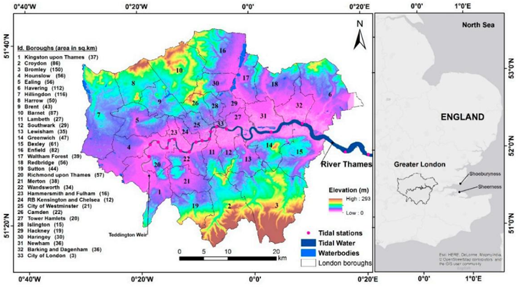
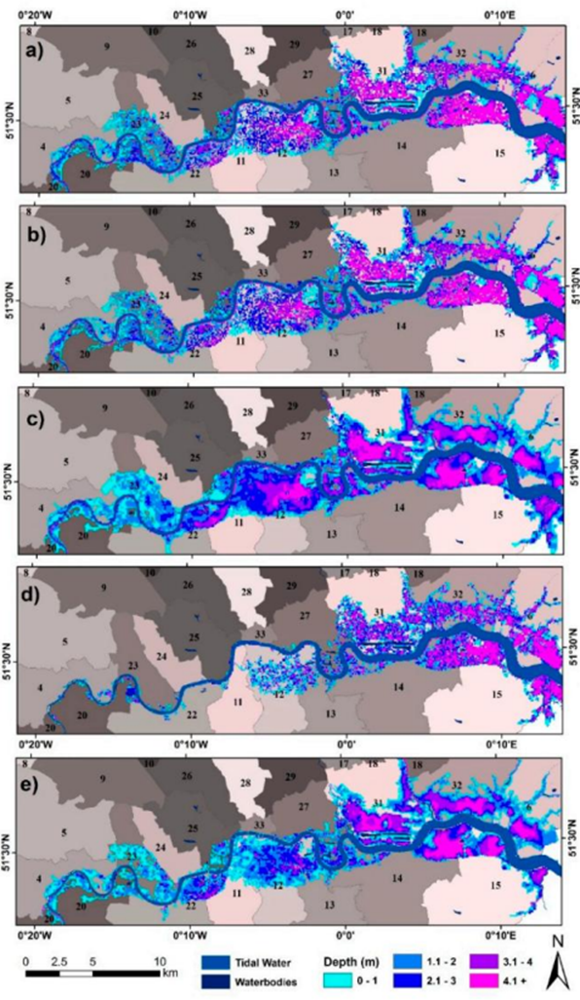

Week 4 - London Flooding
4.1 Summary
London, the economic heart of the United Kingdom and a major hub for international commerce, has a vast borough covering 1,573 square miles of Greater London. As the population continues to grow, urban development is gradually expanding into the Thames Estuary. Areas along the Thames, particularly the City of Finance and Canary Wharf, are densely populated with commercial activity, but these areas are also at significant risk of flooding, with more than 350 square miles of land (approximately 22.25%) located in flood-prone floodplains.

(Source: Yunus, et al., 2016)
In July 2021, London was hit by severe flooding, a disaster triggered by extreme rainfall that flooded roads and tube stations, disrupted transportation and forced residents to evacuate. The flooding had a profound impact on people’s daily lives, turning streets into waterways, trapping vehicles and causing hardship for residents as they fled. The City of London and relevant departments are actively assessing and improving flood protection measures, developing strategies to respond to extreme weather events and mitigating the effects of climate change. Emergency services, such as the Fire Service, responded quickly to carry out rescue missions during the floods to ensure the safety of citizens.
The London Roundtable’s progress report noted that the flooding caused severe damage to homes and infrastructure in the city, resulting in many residents needing to be relocated, damage to critical infrastructure, the closure or partial closure of 30 Tube stations, and the forced evacuation of hospital wards and schools. Some schools have not been able to resume classes so far. The floods have also affected parts of London, disrupting road and rail traffic, flooding stores and offices, severely affecting Tube lines and overground rail services, and making major commuter routes such as the A4 and M23 impassable, affecting commuters.
It is predicted that without flood management measures, annual expected losses in London will rise from the current £2 billion to between £2.7 and £3 billion as the climate warms, with the risk rising further to between £3.5 and £3.9 billion if temperatures rise by 4°C. The UK government publishes a Climate Change Risk Assessment (CCRA) every five years under the Climate Change Act 2008 and has implemented a £15 million Natural Flood Management (NFM) program between 2017 and 2021 to explore effective flood management techniques to meet future challenges.
The UK Environment Agency (EA) this week unveiled a multi-billion pound plan to protect London from flooding, but the regulator said there is a ‘funding gap’ that needs to be filled (McGlone, 2024).
London has implemented a comprehensive range of policies and measures to address flooding challenges that reflect the city’s commitment to resilience and sustainability. Below are a few of London’s key strategies for flood protection:
London Resilience Strategy: In February 2020, London published this strategy, which aims to increase the city’s resilience to a range of shocks and stresses, including flood risk. The strategy emphasizes the importance of cross-sectoral collaboration and community engagement to ensure effective risk management and response.
The Thames Flood Barrier: as a key component of London’s flood protection system, the Thames Flood Barrier is able to close at times of unusually high tides, providing London with protection from the damage caused by tidal flooding.
Thames Basin Management Plan: This long-term plan aims to manage water resources and flood risk in the Thames Basin through a combination of measures. Plans include improving the riverbanks, upgrading the capacity of the drainage system.
Sustainable Urban Drainage Systems (SuDS): London actively promotes the use of SuDS, such as permeable paving, rain gardens and green roofs, which help to reduce the risk of flooding by reducing surface runoff and increasing the natural infiltration and retention of rainwater.
Flood warning and information services: The UK Environment Agency provides key flood warning services to enable residents and businesses to receive timely information on potential flooding and to prepare for it. The London government and related departments also provide flood-related information and response guidelines through a variety of channels to raise public awareness of preparedness and response capabilities.
This issue and its solutions are also directly related to the SDG targets:
11.3 - Inclusive urbanization and sustainability of cities, where the tiered targets reduce the adverse effects of natural disasters and implement policies for inclusion(Our World in Data team, 2023).
13.1 - Resilience and adaptation to climate-related and natural disasters (Our World in Data team, 2023).
4.2 Application
The flood problem in London is a complex environmental challenge in which the application of remote sensing technology provides an important tool for monitoring, assessing and responding to floods. The following are some of the key applications of combining remote sensing data to the flood problem in London:
Flood monitoring and assessment:
Using Synthetic Aperture Radar (SAR) data(Cruz, et al., 2022), it is possible to penetrate cloud cover and obtain real-time images of the extent of flooding and affected areas. This is critical for rapid response and assessment of damage caused by flooding.
Multi-temporal remote sensing data allows monitoring of the dynamics of flooding, such as the rate and extent of spreading of floodwaters and the recovery of floodwaters after they have receded.
Land cover change analysis:
Using high-resolution optical remote sensing data, such as Sentinel-2 data(Phiri, et al., 2020), it is possible to monitor land cover changes during urbanization, including the impact of urban sprawl on flood-prone areas.
Analyzing historical and current land cover data, high flood risk areas can be identified and provide a scientific basis for urban planning and land management.
Infrastructure and critical asset protection:
Remote sensing data can be used to identify and map critical infrastructure, such as transportation networks, hospitals, schools, etc., information that is essential for flood emergency management and post-disaster recovery.
Combined with Geographic Information Systems (GIS) and remote sensing data, the potential threat of flooding to these critical assets can be assessed and protective measures can be developed accordingly.
Flood early warning systems:
The accuracy and timeliness of flood warning systems can be improved by integrating real-time remotely sensed data (precipitation data: M3HP, M10P and DG25, river data: DTR and RD) and advanced hydrologic modeling.
Remote sensing data can also be used to monitor river levels and flows, providing key input parameters for flood warning.

(Source: Yunus, et al., 2016)
Climate change adaptation planning:
Long-term series of remote sensing data can help analyze the impacts of climate change on flooding patterns and support the development of adaptive planning.
Monitoring the urban heat island effect and changes in green space cover, remote sensing data can guide urban planning to enhance the climate resilience of cities.
In addressing this challenge, urban planners need to think carefully about the constraints and what they must be aware of.
Financial constraints
Skills required
Different objectives, priorities and regulatory environments. For example, data is not always shared due to commercial and legal sensitivities, limiting effective collaboration.
Public participation and public expectations
4.3 Reflection
After an in-depth study of the flooding problem in London, I have come to realize that it is a topic that involves a multitude of factors. London’s urban growth and change is the result of a combination of factors, which requires decision makers to consider the correlation between these factors in a comprehensive manner when formulating relevant policies. Particularly in the context of climate change, the increase in extreme weather events makes flood risk assessment and identifying vulnerable areas in cities important.
Flooding in London is of great interest to me, and as the impacts of climate change increase, flood risk assessment and the identification of vulnerable areas will play an increasingly important role in urban planning and sustainable development. With limited resources and funding, accurately identifying the most prioritized areas is essential to effectively respond to the threat of flooding.
London’s continued population growth is challenging the city’s infrastructure and public services, particularly in terms of flood risk management. I am curious about how London is responding to this growth and whether it will take steps to direct population distribution or improve development and infrastructure within the city to accommodate this growth.
I am also interested in how London is using remote sensing data and other advanced technologies to monitor and predict flood risk. The application of these technologies helps us to better understand flooding patterns and trends, and provides policymakers with a scientific basis to more effectively develop and implement flood prevention measures. This technology-driven approach may become the key to future urban flood management.
4.4 References
Cruz, H., Vestias, M., Monteiro, J., Neto, H. and Duarte, R. P. (2022) ‘A Review of Synthetic-Aperture Radar Image Formation Algorithms and Implementations: A Computational Perspective’, Remote Sensing Image Processing, 14(5), 1258.
Mcglone, C. (2023) ‘Funding gap’ in crucial plan to protect London from flooding. Available at: https://eandt.theiet.org/2023/05/19/funding-gap-crucial-plan-protect-london-flooding(Accessed: 12 February 2024).
Our World in Data team (2023) Make cities inclusive, safe, resilient and sustainable. Available at: https://ourworldindata.org/sdgs/sustainable-cities#sdg-indicator-11-5-1-deaths-and-injuries-from-natural-disasters (Accessed: 12 February 2024).
Our World in Data team (2023) Make cities inclusive, safe, resilient and sustainable. Available at: https://ourworldindata.org/sdgs/climate-action#target-13-2-integrate-climate-change-measures-into-policy-and-planning (Accessed: 12 February 2024).
Phiri, D., Simwanda, M., Salekin, S., Nyirenda, V. R., Murayama, Y. and Ranagalage, M. (2020) ‘Sentinel-2 Data for Land Cover/Use Mapping: A Review’, Urban Remote Sensing, 12(14), 2291.
Sustainable drainage (2024) Available at: https://www.susdrain.org/delivering-suds/using-suds/background/sustainable-drainage.html(Accessed: 12 February 2024).
Yunus, A. P., Avtar, R., Kraines, S., Yamamuro, M., Lindberg, F. and Grimmond, C. S. B. (2016) ‘Uncertainties in tidally adjusted estimates of sea level rise flooding (bathtub model) for the Greater London’， Remote Sensing, 8 (5). 366.